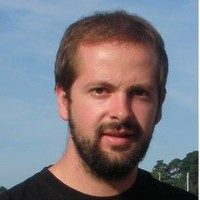
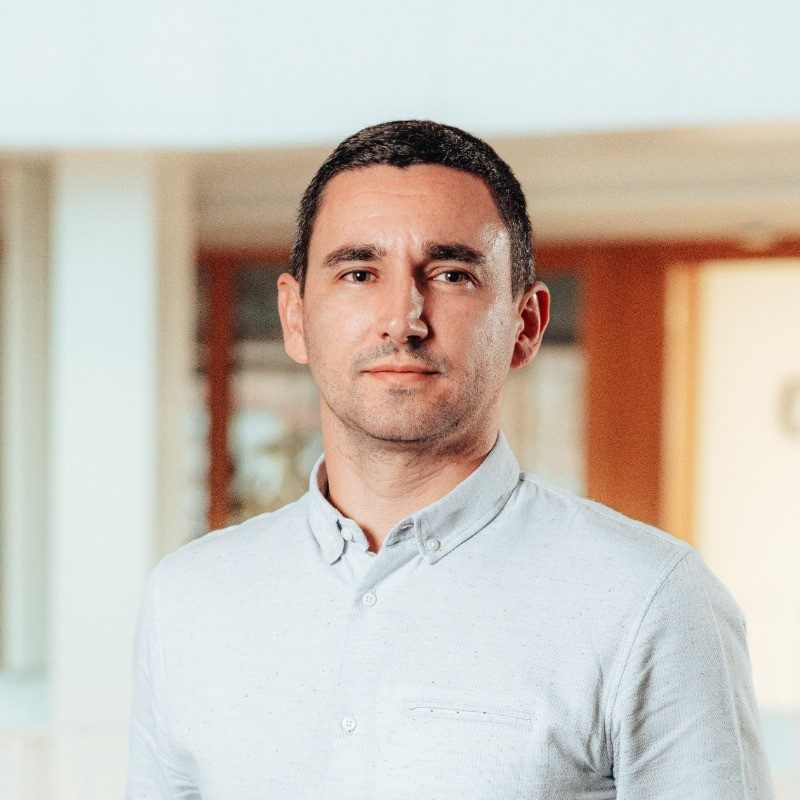
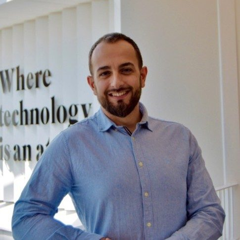

María Jesús Lamela
Directora de la Cátedra Ikerlan
Profesores e investigadores de ambos centros que mantienen una estrecha relación de cooperación en formación e investigación.
La Cátedra de Ikerlan-Uniovi está formada por profesores e investigadores de ambos centros, los cuales han mantenido una estrecha relación de cooperación en tareas de formación de estudiantes (prácticas externas, TFGs, TFMs…) e investigación. Fruto de la excelente colaboración entre ambos centros se ha consolidado esta Cátedra.
Si bien los resultados en investigación y formación han sido satisfactorios durante los últimos años, lo más importante para ambas instituciones es el factor humano. A continuación se presentan las personas involucradas en la Cátedra Ikerlan-Uniovi.
Directora de la Cátedra Ikerlan

Profesor e Investigador DCIF
Director de Personas y Comunicación en IKERLAN

Responsable de área Tecnologías Mecatrónicas

Responsable de Equipo AI & Data
Escríbenos y te informaremos de prácticas, TFG/TFM y proyectos.